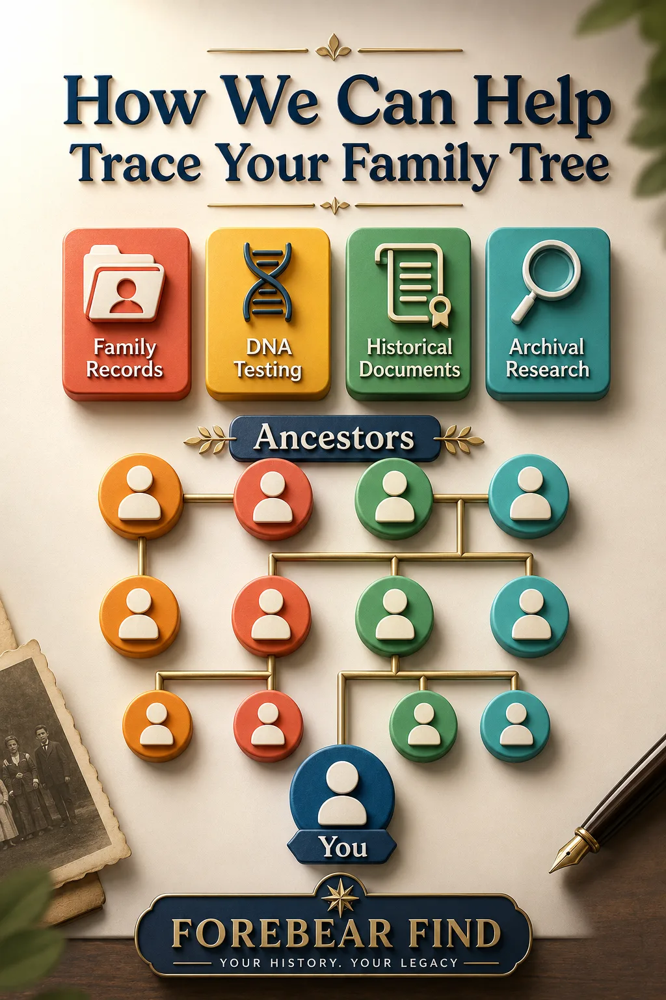

Prezzi Trasparenti per Servizi Genealogici Professionali
Da Forebear Find, offriamo prezzi chiari e trasparenti per i nostri servizi professionali di ricerca genealogica. Che tu stia richiedendo la cittadinanza italiana per discendenza, tracciando le tue origini afroamericane o costruendo un albero genealogico completo, abbiamo pacchetti flessibili per soddisfare le tue esigenze e il tuo budget.

Pacchetti Orari di Ricerca - Il Miglior Rapporto Qualità/Prezzo per la Ricerca Completa
I nostri pacchetti orari offrono il miglior rapporto qualità/prezzo per progetti genealogici che richiedono ricerche archivistiche approfondite. Ogni pacchetto include un rapporto di ricerca dettagliato con citazioni delle fonti, copie di tutti i documenti trovati, grafici cronologici o alberi genealogici e una consulenza di follow-up di 15 minuti per discutere i risultati e i passi successivi.
Pacchetto Ricerca Base
$275 per 5 ore ($55/ora)
Ideale per ricerche mirate di documenti specifici, domande genealogiche precise o un'esplorazione iniziale delle proprie origini. Perfetto per localizzare un singolo atto di nascita italiano, ricercare un antenato o rispondere a domande genealogiche specifiche.
Pacchetto Ricerca Standard
$525 per 10 ore ($52,50/ora)
Adatto a progetti genealogici di media complessità con obiettivi chiari, come tracciare una linea familiare per 2–3 generazioni, ottenere più atti vitali italiani o ricercare documenti di immigrazione e naturalizzazione per domande di doppia cittadinanza.
Pacchetto Famiglia Approfondito
$995 per 20 ore ($49,75/ora)
Ideale per progetti di albero genealogico estesi, per superare blocchi genealogici difficili o per ricerche multigenerazionali complete. Eccellente per la documentazione relativa alla cittadinanza italiana che richiede ricerche su più comuni o per la ricostruzione di complesse linee genealogiche afroamericane.
Pacchetto Patrimonio Completo
$1.425 per 30 ore ($47,50/ora)
Il nostro pacchetto più completo, perfetto per la preparazione integrale della domanda di cittadinanza italiana, per progetti di storia familiare estesi che coprono più linee genealogiche o per ricerche complesse che richiedono lavoro archivistico internazionale. Include una documentazione completa adatta a procedimenti legali o domande di cittadinanza.
Accettiamo Visa, Mastercard, AmEx, Discover, PayPal e Goldback
Servizi a Tariffa Fissa - Consegna Rapida per Esigenze Specifiche
I nostri servizi a tariffa fissa offrono attività genealogiche specifiche con risultati definiti e costi certi. Ideali quando sai esattamente di cosa hai bisogno e vuoi un prezzo fisso senza fatturazione oraria.
Servizio di Traduzione Documenti
$25 a pagina
Traduzione professionale certificata dall'italiano all'inglese di documenti genealogici. Include atti vitali, registri parrocchiali e documenti legali. Consegna entro 2–4 giorni lavorativi.
Ricerca di Atti Civili
$60 per atto
Ricerca di atti vitali statunitensi, inclusi certificati di nascita, matrimonio e morte, presso uffici statali e di contea. Include ricerca, recupero e consegna digitale. Tempi di consegna: 5–7 giorni lavorativi.
Recupero Documenti dagli Archivi
$75 per recupero
Recupero di documenti dal NARA (Archivio Nazionale degli Stati Uniti), archivi statali o altri depositi. Include spese di ricerca, costi di riproduzione e consegna digitale. Consegna: 10–15 giorni lavorativi (in base ai tempi di risposta dell'archivio).
Pacchetto Documenti per la Cittadinanza Italiana
$350 pacchetto completo
Pacchetto documentale completo per le domande di cittadinanza italiana per discendenza, incluso il recupero di 3–4 atti vitali italiani chiave con relative certificazioni e apostille. Non include il tempo di ricerca genealogica (utilizzare i pacchetti orari per la verifica della discendenza). Consegna: 2–4 settimane in base ai tempi di risposta degli uffici italiani.
Narrazione della Storia Ancestrale
$200 per biografia ancestrale
Narrazione biografica scritta professionalmente (500–1.000 parole) che porta in vita la storia di un antenato con contesto storico, fatti documentati e uno stile narrativo coinvolgente. Include sintesi della ricerca e citazioni delle fonti. Consegna: 2–3 settimane.
Progetti di Ricerca Specializzati - Soluzioni Personalizzate
I nostri progetti di ricerca specializzati affrontano sfide genealogiche uniche che richiedono conoscenze specialistiche e tecniche di ricerca avanzate. I prezzi sono personalizzati in base all'ampiezza e alla complessità del progetto.
Ricerca Genealogica Afroamericana
Preventivo personalizzato a partire da $375
Ricerca specializzata per tracciare le origini afroamericane attraverso la schiavitù, la Ricostruzione e oltre. Utilizza i registri del Freedmen's Bureau, documenti delle piantagioni, atti vitali post-emancipazione e metodologie di ricerca specializzate. Il prezzo finale dipende dall'ampiezza del progetto.
Ricostruzione della Linea Genealogica Europea
A partire da $750
Tracciamento multigenerazionale della discendenza in Italia, Spagna, Francia o altri paesi europei. Include ricerca archivistica all'estero, servizi di traduzione e documentazione completa. Ideale per la ricerca nobiliare, l'identificazione del paese di origine o la ricostruzione completa dell'albero genealogico. Disponibili progetti a più fasi.
Pagamento Personalizzato - Importi Flessibili
Hai bisogno di pagare un importo personalizzato per il tuo progetto di ricerca genealogica? Inserisci l'importo desiderato qui sotto e completa il pagamento in modo sicuro tramite PayPal.
Cosa È Incluso in Tutti i Pacchetti
- Consulenza iniziale gratuita per comprendere i tuoi obiettivi genealogici e di ricerca
- Accesso a database genealogici professionali, archivi e servizi in abbonamento
- Rapporti di ricerca dettagliati con citazioni appropriate delle fonti secondo gli standard genealogici
- Copie digitali di tutti i documenti e atti trovati
- Grafici cronologici, diagrammi dell'albero genealogico o profili degli antenati, ove appropriato
- Comunicazione costante e aggiornamenti sul progetto durante tutto il processo di ricerca
- Consulenza di follow-up di 15 minuti per discutere i risultati e le raccomandazioni (pacchetti orari)
La Nostra Garanzia di Rimborso di 30 Giorni
La tua soddisfazione è la nostra priorità da Forebear Find. Siamo pienamente a favore della qualità dei nostri servizi di ricerca genealogica. Se non sei completamente soddisfatto dei risultati della tua ricerca, offriamo un rimborso completo entro 30 giorni dal completamento del progetto o dalla consegna del rapporto finale. Contattaci all'indirizzo info@forebearfind.com o chiama il +1 (435) 219-5120 per discutere qualsiasi problema relativo al tuo progetto.
Hai Bisogno di un Preventivo Personalizzato?
La storia genealogica di ogni famiglia è unica e alcuni progetti richiedono prezzi personalizzati in base a specifiche esigenze di ricerca, ubicazioni geografiche, periodi storici o complessità. Siamo lieti di fornire preventivi personalizzati per:
- Grandi progetti di ricerca per riunioni di famiglia
- Ricerca archivistica internazionale che richiede spostamenti
- Problemi genealogici complessi che richiedono tecniche avanzate
- Libri di storia familiare personalizzati con design professionale e stampa
- Progetti di patrimonio aziendale per imprese e organizzazioni
- Analisi del DNA e consulenza di genealogia genetica
Contattaci oggi per una consulenza gratuita e un preventivo personalizzato per il tuo progetto di ricerca genealogica.
Perché Scegliere Forebear Find per la Tua Ricerca Genealogica
- Competenza specializzata nei sistemi di atti vitali italiani e nei requisiti per la doppia cittadinanza
- Formazione professionale nelle metodologie di ricerca genealogica afroamericana
- Relazioni dirette con archivi italiani e uffici governativi
- Prezzi trasparenti senza costi nascosti o spese impreviste
- Comprovata esperienza in domande di cittadinanza di successo e scoperte genealogiche
- Servizio personalizzato con comunicazione diretta durante tutto il tuo progetto
- Opzioni di pagamento flessibili incluse carte di credito, PayPal e valute alternative
Pronto a Iniziare il Tuo Percorso Genealogico?
Inizia oggi a esplorare la storia della tua famiglia scegliendo uno dei pacchetti di ricerca sopra indicati o chatta con noi per discutere le tue specifiche esigenze genealogiche e ottenere un preventivo personalizzato.